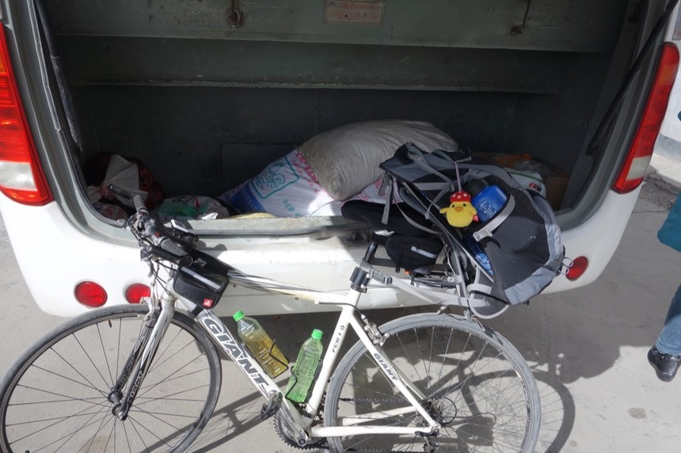
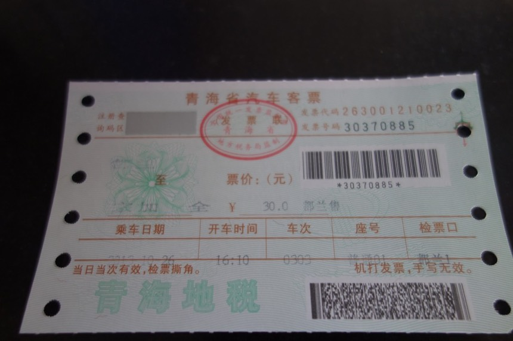

10/26 Day 6 都蘭
蓋兩條棉被睡覺，很重但很溫暖。離開旅館前一如往常都會把房間整理的和剛入住時一樣。
一覺又睡到七點二十，被外面的天空給亮醒，良好的睡眠雖然會小賴床，但是想到剛出發的前幾天睡得很不好，就覺得現在幸福很多。
把床上和桌上這些東西，重新放回車上的包包或是掛上車子，加上自己換裝還有盥洗，所花費的時間是30分鐘。
穿上昨天自製的腳踝襪，這次沒有穿好，下面的襪子應該要套在腳踝襪上，這樣腳踝的部分才不會往上捲動而位置跑掉。

以為天已經很亮了，原來才剛日出而已。早上依然好冷，已經逐漸習慣這溫度。
出發第一件事，就是到隔壁汽車站問有沒有到格爾木的車。
很遺憾，並沒有直達車。
得從都蘭（我預計會經過的地方）或是烏蘭（沒有想過要去，但是往烏蘭的車班一天有四班，讓我不禁有想要改變路線的念頭）轉車。
有超過半數的車輛幾乎都開往西寧（回頭路啦），是老天爺默默勸我回頭是岸嗎？
而往都蘭的車“一天只有一班”，中午12點發車。
現在是早上8點多，最差或是預期情況，就是中午才能搭上往都蘭的車，然後在繼續往格爾木方向搭車。
最好就是在早上就可以攔到往都蘭或是格爾木的便車。
補充一下，之所以不甘心只搭到都蘭，是因為從現在的茶卡，往都蘭，正好就是騎單車一天的路程。
所以當我站在路邊攔車的時候，如果人生分歧路線另一邊的我決定騎車到都蘭，當我罰站在路邊的每一分鐘，另一個我都正在往都蘭前進。
而一天騎單車可以到都蘭，為什麼我要花一天的時間搭巴士到都蘭呢？
當然希望既然都決定往格爾木的這段路用搭車的，那就能搭多遠算多遠，把省下來的時間拿來騎行青藏公路。
今天的第一班車來了，就是回頭是岸往西寧方向，老天爺你...真愛跟我開玩笑。
車子很新這點有點令人驚喜！我以為會是爛爛的那種小巴士，再來就是發車時間“非常”準點，只能說一個佩服。
先去買一籠肉包（9）當早餐吃，（漲價了，一籠統一都是十顆，上次吃還是7元，6年前吃則是3~5元不等）
駐足在汽車站門口的路邊（連在店內吃早餐的餘裕都沒有，寧可在路邊站著吃，以免錯過來往車輛）
離開茶卡必經之路開始攔便車。平常騎車有在運動覺得很暖活，現在站著等車，冷到全身不停的顫抖，而肺部更是有種喘不過氣的感覺。
這一攔就是他媽的四個小時（無力），其實我沒有很生氣，只是覺得很無力。為什麼沒有人願意載我？
每次看到有機會可以搭的車輛（休旅車、有後斗的小貨車、箱型車），都會很興奮地舉起右手試圖攔車。
絕大部分的駕駛都不會停車，但他們會在車內跟你搖搖手（輕微放慢速度）表示不載，不會冷酷的毫無反應。
有些小貨車會停下來，至少我有機會開口說我要去什麼地方，對方會說是當地人，只是要去附近的工地而已，無法載我，不論是都蘭或是格爾木。
其間發現有“極大量”的休旅車都開往西藏，像是拉薩、日喀则等地，直接在前擋風玻璃上貼上目的地的紙牌，這就是我攔車的最佳選擇呀！
好不容易攔下一輛休旅車，就是擋風玻璃上貼著“拉薩”，我還是問了傻問題。
“請問會經過都蘭嗎？”
“你要付多少錢？”對方回答（一個手持單眼相機坐在副駕駛座的微胖中年婦人）
“啊？會經過嗎？”（我沒聽清楚，又重問了一次）
“你要付多・少・錢？”（婦人又重複了一次，這次我聽懂了）
“那會經過格爾木嗎？”（其實是個廢話問題，往西藏一定會經過格爾木，但往都蘭跟往格爾木是不同的價錢，所以我想提出來）
“你・要・付・多・少・錢？”（對方有點不耐煩）
奇怪～關於價錢的問題不是應該由我發問嗎，”請問搭便車到ＯＯ要多少錢？“這樣。
「100！」我開價（看網路文章，50左右就可以搭便車到格爾木，但我喊了兩倍的價錢）
誰知道對方居然閒少！而且車子開了就走！！連跟我還價的功夫都沒有！！！（也還好沒還價，我也不知道自己能接受的價位是多少）
是我開的價錢太低嗎？
第二輛是小貨卡，後面車斗綁了一個超大的卡車輪胎。
只開到都蘭，開價50（這價錢基本上應該可以到格爾木了吧？依照網路文章的說法）
由於是好不容易攔下的車子，我居然同意了這偏高的價錢，接著提說我還有一輛單車放後面行嗎？
對方點頭說好，結果看到我把小喵號牽來，立刻又反悔說載不了，車子下一秒又開走了。
也好，我不怎麼怪他，一來價錢有點高，二來要怎麼把小喵號放後面的確需要研究一下。
這兩個例子是最接近成功的案例，剩下就是簡短回答“不去”，還有連車都不停，只在車內揮揮手拒絕的。
攔車的時間想去茶卡的火車站看看車班，作為攔便車、搭巴士之外的第三個選擇。
繞了一圈，沒發現火車站，問路人火車站在那？
答案是沒有火車站！這真是太不科學了！因為地圖上明明就有畫鐵路到茶卡。（茶卡產鹽似乎小有名氣）
然後發現後輪有點洩氣，每天睡醒之後，外胎都會陷入微軟的狀態，肉眼檢視外胎有兩處以上的傷口。
先打氣應急，晚上應該換個內胎保險些，以免騎車到一半沒氣，就要在路邊換胎。
就這麼站在路邊四個小時，攔到中午12點，一無所獲（另一個分歧選擇騎單車上路的我，應該都騎一半了吧）
剛好往都蘭的巴士來了，真是準時的令人敬佩，趕緊牽著車過去準備搭乘。
司機（車門邊紅外套，黃條紋那位）問我“票買了沒？”
“還沒～我這就去買！你等我！”（以為早上可以攔到車，所以沒買中午的車票）
“不用了～直接把錢給我行了”（啊？可以這樣嗎？）
原來司機是想把車資直接進自己口袋，好吧～無妨，我不在意這點。
跟司機說有輛單車能不能載一下，要放哪邊？

司機就打開了後車廂，不太大也不太小，放了些零散的行李但幸好空間還很充裕。一眼看去貌似不可能放得下單車。
由於高度的限制，小喵號只能放橫的，然後空間（深度夠）無懈可擊的剛剛好，不會卡住個什麼讓大家都很困擾這樣。
巴士滿座！運氣真好我跟小喵號都有位置可以搭乘，我坐在車廂最後面的位置，屁股下方就是小喵號，一路上都會默默的替它加油打氣。
人+小喵號=車資40元
後來我看照片中的價目表，到都蘭明明才28。我不想當盤子呀～～～～～Orz
後背包內重的東西我拿出來放在座位上隨身攜帶（包包內還有小包包，所以拿出這些重的東西很容易）
因為一路實在非常的顛簸，碰碰車的那種等級，路況也很差，沿路都有施工。
一路都在祈禱小喵號不要被震壞了，也有點怨嘆剛才沒有做些保護防震的措施。

從窗戶往外看去 又是該死的大逆風不停不停的吹，幸好今天人不在路上踩踏版頂著風前進。塞翁失馬，焉知非福。
就算頂著逆風騎車是往西藏一路上無可避免的磨難，我也要從青藏公路開始受罪。
發車後沒多久，有一點點慶幸沒有攔到車，本來想攔小貨卡，
我跟小喵號都坐在後車斗這樣，像是西部電影的感覺，可以吹著風，看著倒退的風景，用手扶撐著單車（幻想情境）
但以這路上顛簸的程度，只怕光是搭到都蘭我全身骨頭就已經閃了。（在車內吃東西或是講話要小心咬到舌頭的顛簸）
往都蘭約128公里，風景大概就像這樣，變化不大，因為沒辦法親自騎乘這段路，所以我想至少用自己的眼睛看看景致，一路上沒有打瞌睡。
下午兩點到都蘭，可惜這個時間已經沒有往格爾木的車了。
要是我能在中午12點趕到都蘭就有機會繼續往前搭乘。
又要在路邊攔一下午的過路車嗎？饒了我吧。
在汽車站內研究還有什麼車可以搭，想要慢慢的往格爾木的方向推進，選擇很少。（往格爾木一天兩班，早午各一班這點還算不錯）
買了30元的票，下午四點十分再從這搭159公里到宗加。（預計會經過，一個很小的地方，比茶卡還小的那種小）

然後明天再從宗加搭車到格爾木。
坐在汽車站外頭吃泡麵，要等兩個小時才會發車，開始思考，想著結果都是“明天還要再搭車才會到格爾木”
選項一：茶卡〉都蘭（過夜），都蘭〉格爾木（直達，一大早就有車）
選項二：茶卡〉都蘭〉宗加（過夜），宗加〉格爾木（有沒有車是問號）
差別在於是從宗加這個地方搭，連車班都是問號的巴士（不知道發車時間。或是有沒有車）
或是在都蘭住上一晚，明天早上八點二十分就有一班直達車可以搭。
其他一起在汽車站等車的旅客，是不是對這些巴士都如此嶄新感到不可思議呢？巴士有大有小，最小大概就是今天搭乘的這種。
遠方那輛淺藍色的車，就是往格爾木的早班巴士，但今天已經沒有車班了。
問了汽車站的員工，宗加有到格爾木的車嗎？
答案不是很肯定，只說有過路車。要在路邊攔。
亦然決定退票（手續費6元），改買明天早上的直達車67元。
這決定看似很合理，但其實內心很掙扎的，因為從結果來看，
我花了一早上攔車，一無所獲，花兩個小時搭巴士，只為了搭乘一段我自己騎車一天就會到的地方，今天很犯傻也沒有達到良好的搭車效率。
而且已經預先買了往宗加的票，巴士再20分鐘就要發車，而退票還要收手續費。
但為了可以順利到達格爾木，還是決定在都蘭住下，不強求一定要多搭一點車，增加今日的移動距離才“不吃虧”這樣的心態。
在都蘭騎車晃呀晃，連「招待所」的牌子都沒有
盡是“賓館”，房價也貴的驚人，汽車站對面的西部賓館開價80（最便宜的房間），”能洗熱水澡“服務員強調。
80元換成台幣不過400元，我卻遲疑的久久未點頭，最後選擇轉身離開。
只要花台幣400元，就可以洗上舒服的熱水澡！對於過去五天都只能擦澡，更別說洗頭的我來說，有多大的吸引力，我還是沒留下。
這些都是沒緣入住的賓館，其實他們有個好處，一進去就會看到房型和房價的牌子，只需看一眼，也不用開口詢價，就能直接離開。
看來一天50的旅費，食＋宿。在經濟起飛的中國已經是神話了，我相信還是有人能達到這樣的旅行條件，可是和6年前相比，真是好難～好難。
連這樣看似平價的旅館，其開出來的價錢都會讓我皺眉頭，究竟是我的預算太低，還是物價的消費太高？
我不想一天辛勞騎車之後，晚餐是泡麵連吃兩碗（連刷牙也刷不掉的泡麵味道）
想要讓自己吃好一點，住好一點，不要拘泥預算拮据的旅行。
目標是騎單車到拉薩，而不是“一天花50元”騎單車到拉薩，這是個節儉的目標，能達到很好，但不應該成為旅行的限制。
在城市繞了一圈又一圈，在離汽車站不遠處的旅館找到40元一床的三人房。
注意，這價錢是一“床”不是一“房”，我在蘭州時問說三人房怎麼反而比較貴？因為通常住多人間，我的所有權只有房間內的一張床。
雖然現在只有我一個人，也許晚點會有床伴出現，而當這件事情發生的時候，旅館老闆要求我把單車移到走廊去擺放。
跟旅館老闆的兒子聊了一下天，關於單車（他向我打聽）、西藏（我向他詢問）等話題。
小老闆隨口問了一句有wifi需要嗎？真是讓我心喜若狂！！速度還不慢！想不到在40元的招待所內居然還有免費的無線網路可以使用！
去廁所（挺大）洗了衣服（距離上次洗，是在蘭州的事情，已經很久了）
首度洗了紅色排汗衣，以及老爺爺七分褲（穿在裡面保暖用）
說是”洗衣服"，其實只是一點心意而已，因為沒有任何的洗衣粉，只是簡單的用水泡著，搓揉一下，然後催眠自己說，衣服已經變得超乾淨！
趁著天色還亮，拉起童軍繩曬在房內，怎麼看也不像是會曬乾的樣子。
後來看到外面有人在曬床單，就跟著拿去外面曬一會最後的太陽。
天黑之前要收進房裡，結果衣服居然凍僵了！真是把我笑死了～有沒有這麼冷？
照片可能拍不太出來，但是衣服跟褲子都已經結凍了，折起來會有脆脆的聲音，而且衣服一旦結凍了，就無法變乾不是嗎？
簡單的擦完澡後，等等，我說了“簡單”嗎？
”如何在寒冷的地方擦澡“應該是個可以分享的事情，
如果你全身脫光光剩一條四角褲，然後開始擦澡，擦完之後再把衣服一件件穿起來，這樣應該會出事（感冒或是擦到一半就昏厥之類的。）
我自己是分成3~4個步驟，
一，全身衣服都穿著，先擦頭髮跟洗臉，然後盡可能的把頭髮弄乾之後，戴上瓜皮帽保暖。
二，褲子不動，僅脫掉上衣，擦身體的毛巾有多乾擰多乾，儘量不要讓身上有水滴或是會往下流到褲子，擦完身體後趕緊穿上睡衣。
三，換擦下半身，因為兩條腿有塗抹酸痛藥膏，所以擦完腳後，通常還要認真的把毛巾再洗一次。
四，如果可以的話，再換完睡衣後，慢條斯理的洗洗腳丫子。
像這樣，用電熱爐燒熱水泡泡腳，暖活一下身心。哎呀～我可憐的腳踝，我太晚保護你們了，但還好在上青藏高原之前就發現異狀。
沒能洗熱水澡，至少可以泡泡腳也是很享受，如果旅館內沒有電熱爐，就很難洗這麼舒適，因為熱水有限。
保溫瓶的水，要先留起明天要喝的部分，剩下的才是拿來盥洗用。
把八寶粥放進熱水裡泡熱當晚餐，熱熱的真好吃。（對～這就是今天的晚餐，反正今天已沒騎到車，不用過太好）

八寶粥綁著童軍繩，因為這樣才好容滾燙的熱水中拿出食物。
晚上八點，無預警停電，不知停電的範圍規模是旅館級還是都蘭級？
停電也罷，表示該睡覺了，附帶一提，旅行的時候平均睡覺的時間大概是晚上九點～十點，這麼晚是因為每天還是會用iPad整理簡單遊記。
明天一早要往格爾木，以偷懶的方式搭車前進～會順利的！然後就正式進入青藏公路的起點了，這幾天的騎行，最為暖身，足矣。非常足矣。
而今天跟明天都用搭車，也是騎行青藏之前，能讓身體好好休息兩天的絕佳機會，得珍惜。
今日花費
9 早餐 一籠肉包（漲價了）
40 巴士 茶卡-》都蘭 人+單車 比公定票價28元貴，但能載上單車
5 碗麵 等車時的午餐兼下午茶（漲價了）
4 晚餐 八寶粥
6 退票手續費 原本買都蘭〉宗加 30元
67 都蘭〉格爾木
40 住宿 三人房的一床 有免費WiFi
----
171 預算大透支，但如果扣掉車票的開銷，食＋宿則是58元
今日騎乘
騎乘時間 00:46:25
距離 6.8km
平均速度 10km
路線圖 (Google Map 連結)